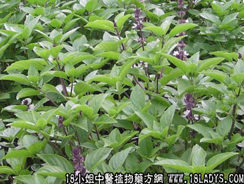

九层塔(中药材植物名:罗勒)(植物科目:唇形科)

别名：千层塔。
植物名：罗勒。
生长环境：本品为一年生直立草本。为栽培植物，也有野生，多生于山坡路旁，灌木丛中。
分布：广东省各地习惯于菜地里栽培，华南、华中、华北均有栽种，热带亚洲亦有。
入药部分：全草。
采集期：夏、秋。
自采地点：家种。
性味：性温、味辛、气香。
功能：止痛、消肿、散瘀、去毒。
主治、用量和用法：1、腹痛：干用3～5钱，清水煎服；2、风湿肿，配伍用；3、流注风疮：干用为末，加葱，酒调煮热，外敷；4、毒虫咬伤，加片糖，捣烂外敷；5、蛇咬伤，配伍用；6、跌打，配伍用。
验方1：（治寒滞肚痛方）：九层塔5钱、黑老虎5钱、清水二碗，煎成一碗服。
（方解）九层塔温以祛寒，香二而行气；黑老虎促脾燥湿，脾阳得运，寒滞可去，肚痛自止。
（方歌）太阴寒滞痛绵绵，九层塔下老虎眠，虎啸风生寒湿散，中土生温腹自然。
验方2：（治风湿肿方）九层塔、大风艾、五月艾、香茅、各等量，煎水外洗患处。
（方解）九层塔辛温祛风，大风艾、五月艾祛风消肿，香茅去风湿、煎水外洗，佼邪从外解，治风湿肿有效。
（方歌）风湿浮肿外洗方，九层塔下大风当，加入五月与香茅，风散肿除体复康。
验方3：（治蛇咬伤方）九层塔5钱、金牛根1两、七星剑5钱、寮刁竹3钱、半边莲5钱、金耳环2钱、清水三碗，煎成一碗，冲酒服。
（方解）方中九层塔、金牛根、七星剑、寮刁竹、半边莲、金耳环均为祛风解毒之品，相辅为用，功力更大，冲酒饮用，能行气走表，攻毒外出，为毒蛇咬伤内服祛风解毒通治之剂。
（方歌）毒蛇凶噬九层塔，金牛根与七星客，耳环刁竹半边莲，煎服酒冲蛇毒煞。